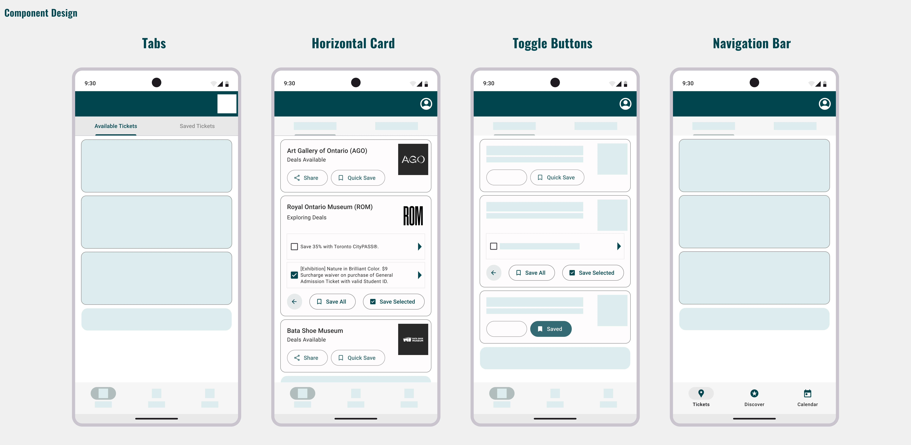
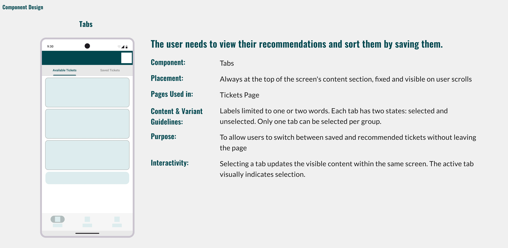
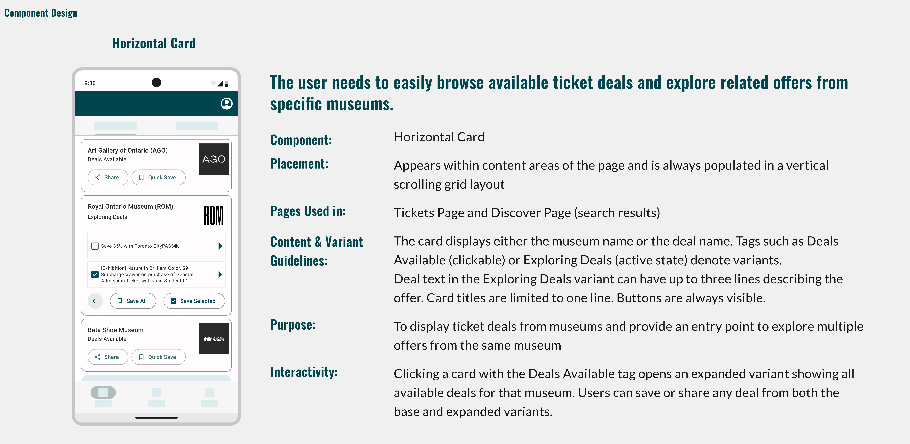
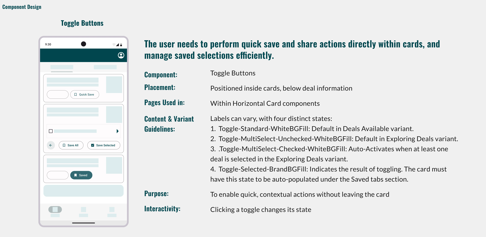

Raise in Ticket prices at major museums like the ROM and AGO, limiting attendance and audience reach.
Low Fidelity UI
—
Based on our research, we designed a low-fidelity prototype that had a search-first information architecture, with a map feature that allowed users to find nearby events.

Home Page

Discover Page with Map feature
High Fidelity UI
—

Component Design
—
The high-fidelity component system was built by myself individually after the course ended, using lo-fi feedback as the brief.



